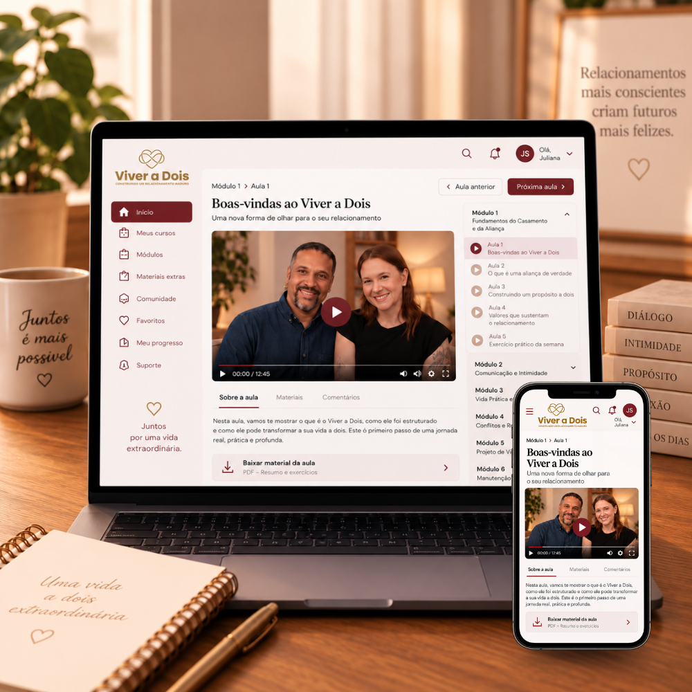
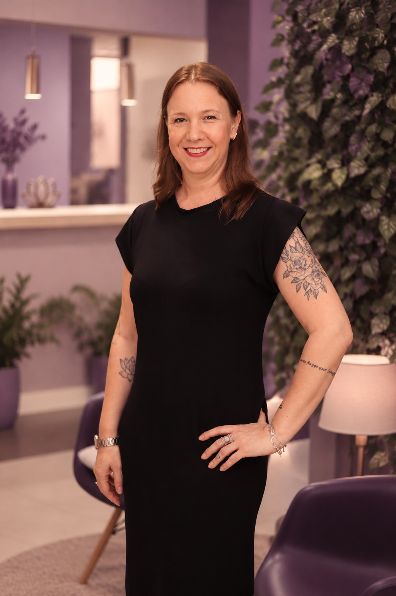
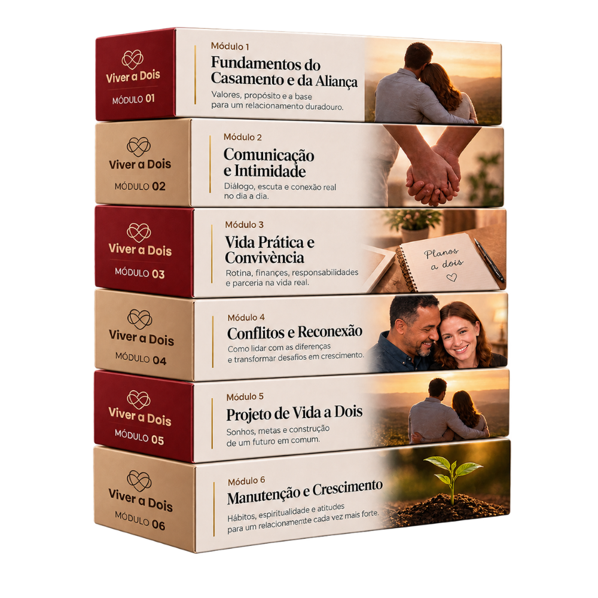

Fundamentos do Casamento e da Aliança
Para compreender o que sustenta uma relação madura, sair das expectativas silenciosas e reconstruir o “nós”.
Antes de começar, assista a esta aula de boas-vindas. Nela, você vai entender por que a reaproximação pode começar por você, mas existe uma parte do casamento que só se reconstrói quando os dois aprendem a caminhar na mesma direção.
O restante da página permanece oculto até o momento do pitch da VSL.
O Guia Prático para Reapaixonar seu Marido mostra como mudar sua participação na dinâmica. O Viver a Dois é o passo para vocês transformarem essa reaproximação em uma construção feita pelos dois.

SIM, QUERO VIVER A DOISO Viver a Dois é uma jornada guiada para casais que ainda querem ficar juntos, mas sentem que a relação foi se perdendo entre responsabilidades, desgaste, diferenças e conversas que nunca chegam a uma solução.
Para compreender o que sustenta uma relação madura, sair das expectativas silenciosas e reconstruir o “nós”.
Para transformar conversas defensivas em escuta, acolhimento, proximidade emocional, desejo e vida íntima.
Para lidar melhor com dinheiro, divisão de tarefas, filhos e a rotina que muitas vezes transforma o casal em uma equipe apenas funcional.
Para atravessar monotonia, mudanças, crises, confiança e dificuldades sem deixar que cada problema vire mais distância.
Para proteger o espaço do casal, equilibrar individualidade, trabalho, família e limites com as famílias de origem.
Para construir direção, propósito comum e uma visão de futuro que os dois reconheçam como sua.
A jornada passa pelas conversas difíceis, mas também pelos momentos simples em que o casal volta a dividir presença, cuidado e planos.


As imagens abaixo representam os movimentos que o programa convida vocês a praticar: presença, clareza e construção compartilhada.
 Presença no dia a dia
Presença no dia a diaEncontrar espaço para estar junto mesmo dentro da rotina possível.
Reconhecer sentimentos, limites e responsabilidades com mais consciência.
 Construção compartilhada
Construção compartilhadaVoltar a olhar para o futuro como algo que pode ser criado pelos dois.
Depois de aplicar os 3 Rs, você poderá perceber mais presença, mais conversa, mais carinho e menos peso dentro de casa. O Viver a Dois avança para outro nível: transformar essa melhora em parceria real para lidar com dinheiro, filhos, rotina, decisões, intimidade e futuro.
A proposta é simples: aprender a olhar para o mesmo problema, em vez de se olharem como adversários.
“Meu marido não vai querer fazer.”
Você não precisa esperar ele ver esta página para garantir a inscrição. Entre, conheça a proposta, assista às primeiras aulas e apresente o programa como ele é: uma oportunidade para vocês cuidarem da relação juntos, e não uma tentativa de provar que ele é o problema.
“Nós já tentamos conversar várias vezes.”
Muitos casais conversam o tempo todo, mas repetem cobrança, defesa, silêncio e ressentimento. O Viver a Dois oferece uma estrutura para compreender o que cada conflito está revelando e construir acordos mais claros.
“Nós não temos tempo.”
O programa fica disponível durante doze meses e foi pensado para ser feito no ritmo possível dentro da vida real. Não exige exposição em grupo, deslocamento ou conciliação de horário com terapeuta.
“E se só eu quiser mudar?”
Uma pessoa pode iniciar um movimento importante. Mas o Viver a Dois é uma proposta honesta: a transformação completa de uma relação exige participação dos dois. O programa não promete mudar alguém à força.
O valor normal do Viver a Dois é R$997. Alunas que chegam em outro momento recebem uma condição especial de R$797.
Por você ter acabado de entrar no Guia Prático para Reapaixonar seu Marido, esta página libera:
Você pode fazer a inscrição, acessar as primeiras aulas e convidar seu marido quando se sentir pronta para apresentar a proposta. Se ele não se identificar com o programa, ou se vocês entenderem que as aulas não atendem às expectativas do casal, basta solicitar o reembolso dentro dos sete dias completos.
O risco da decisão fica com a gente.
Você pode continuar apenas com o Guia, e ele continua sendo um passo completo e importante para iniciar uma mudança na dinâmica do casamento. Mas a condição de R$697, com doze meses de acesso, foi liberada apenas nesta página.
Se você sair, o Viver a Dois continuará existindo. Só não estará disponível novamente por esta mesma condição.
QUERO APROVEITAR A CONDIÇÃO DE NOVA ALUNA

Priscilla Colella é psicóloga clínica, com mais de duas décadas de experiência acompanhando casais, famílias e mulheres que desejam compreender melhor os desafios da vida afetiva.
Ao lado dela, João Rafael, terapeuta junguiano e seu marido, co-criou o Viver a Dois para levar os fundamentos trabalhados na prática clínica a uma jornada acessível, estruturada e aplicável dentro da própria casa.
O objetivo não é entregar regras rígidas. É ajudar vocês a entenderem a relação que construíram, reconhecerem onde estão os principais atritos e criarem uma forma mais consciente de seguir juntos.

Agora existe uma escolha simples: seguir tentando resolver sozinha questões que pertencem aos dois, ou convidar seu marido para construir com você uma relação em que comunicação, intimidade, responsabilidades e futuro não precisem mais ser uma fonte constante de distância.
 SIM, QUERO VIVER A DOIS
SIM, QUERO VIVER A DOIS